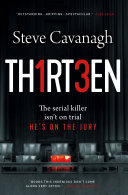

isbn-13: 9781409170662
Audible
“THE SERIAL KILLER ISN’T ON TRIAL. HE’S ON THE JURY… **************** ‘THIRTEEN is my favourite read of the year.’ Sarah Pinborough ‘Outstanding.’ Lee Child ‘Smart and original. This is a belter of a book.’ Clare Mackintosh **************** They were Hollywood’s hottest power couple. They had the world at their feet. Now one of them is dead and Hollywood star Robert Solomon is charged with the brutal murder of his beautiful wife. This is the celebrity murder trial of the century and the defence want one man on their team: con artist turned lawyer Eddie Flynn. All the evidence points to Robert’s guilt, but as the trial begins a series of sinister incidents in the court room start to raise doubts in Eddie’s mind. What if there’s more than one actor in the courtroom? What if the killer isn’t on trial? What if the killer is on the jury? **************** An ingenious plot, gripping action and characters who leap off the page: discover why readers love Steve Cavanagh: ‘An oh so clever hook for an oh so clever, gripping book. THIRTEEN is courtroom drama at its finest, blended with page-turning twists and characters you can’t get enough of. Steve Cavanagh is the John Grisham for a new generation. Slick, thrilling and unique, THIRTEEN is my favourite read of the year.’ Sarah Pinborough, author of the number one bestseller, Behind Her Eyes ‘Outstanding - an intriguing premise, a tense, gripping build-up, and a spectacular climax. This guy is the real deal. Trust me.’ Lee Child ‘Smart and original. This is a belter of a book.’ Clare Mackintosh, bestselling author of I Let You Go and I See You ‘I’ve been tracking Steve Cavanagh for a few years now and Thirteen is his best, a dead bang beast of a book that expertly combining his authority on the law with an absolutely great thrill ride. Books this ingenious don’t come along very often.’ Michael Connelly ‘Great hook. Great plot. Great book. Thirteen is a real page turner and one you won’t want to put down.’ Simon Kernick”